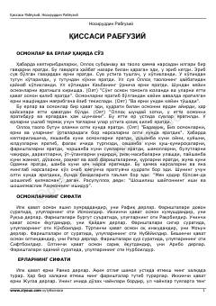

QRDunyoning yaratilishi va islomiy rivoyatlarni oʻz ichiga olgan klassik asar.
Ushbu asar Nosiriddin Rabgʻuziy tomonidan yozilgan boʻlib, unda dunyoning yaratilishi, osmon va yer qatlamlari, farishtalar hamda paygʻambarlar haqidagi islomiy rivoyatlar jamlangan. Kitob qadimiy turkiy tilda yozilgan boʻlib, islom olamining yaratilish tarixi va axloqiy qissalarni oʻz ichiga oladi.